Japan / Hiroshima / Higashihiroshima
Higashihiroshima, Hiroshima: things to do, food and stays
Higashihiroshima · Hiroshima
Higashihiroshima
Highlighted on the Hiroshima map.

Stay
ホテルルートイン東広島西条駅前

Hotel Route Inn Higashi Hiroshima Saijo Ekimae
Hotel in Saijohon, Higashihiroshima with parking.
ベッセルホテル東広島
Besseru Hotel Higashi Hiroshima
Hotel in Saneiji, Higashihiroshima with parking.
レンタルコテージY51 by the sea
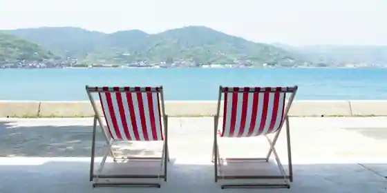
Rentaru Cottage Y51 by the sea
ダイアリー大芝島
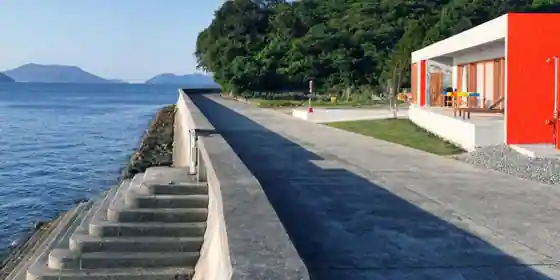
Daiari Oshiba Shima
ホテル ヴァン コーネル
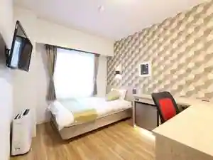
Hotel Van Koneru
ホテルサンライズ２１
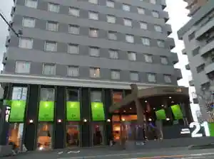
Hotel Sanraizu 21
東広島グリーンホテル モーリス
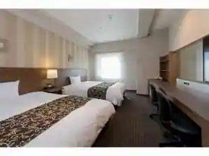
Higashi Hiroshima Gurin Hotel Morisu
東横ＩＮＮ東広島西条駅前
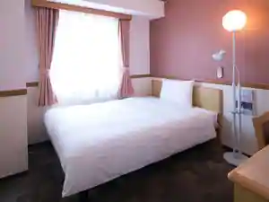
Toyoko INN Higashi Hiroshima Saijo Ekimae
Inn in Saijohon, Higashihiroshima with breakfast available.
広島西条駅前ユースホステル
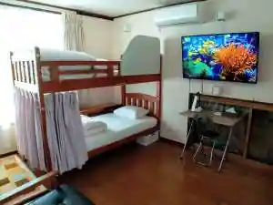
Hiroshima Saijo Ekimae Yusuhosuteru
Inn in Saijooka, Higashihiroshima; 1-minute walk from Saijo Station.
ホテルグランカーサ
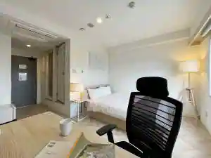
Hotel Gurankasa
Hotel in Saijohon, Higashihiroshima with parking.
備長炭の湯 ホテル東広島ヒルズ西条インター（ＢＢＨグループ）

Bincho Sumi No Yu Hotel Higashi Hiroshima Hiruzu Saijo Inta (BBH Gurupu)
Hotel in Saijootsubo, Higashihiroshima with parking and business travelers; 4-minute drive from Saijo IC.
ホテルカモ
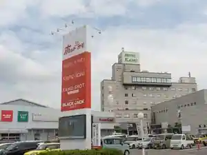
Hotel Kamo
Hotel in Saijo, Higashihiroshima with parking.
Dining
料理屋そうびき

Ryoriya Sobiki
あじと
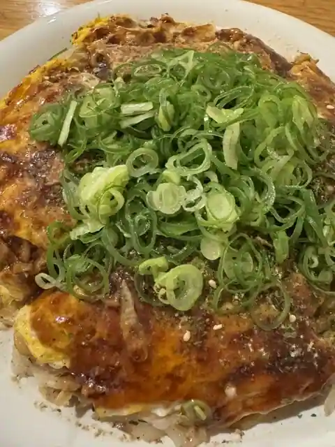
Ajito
ふく政
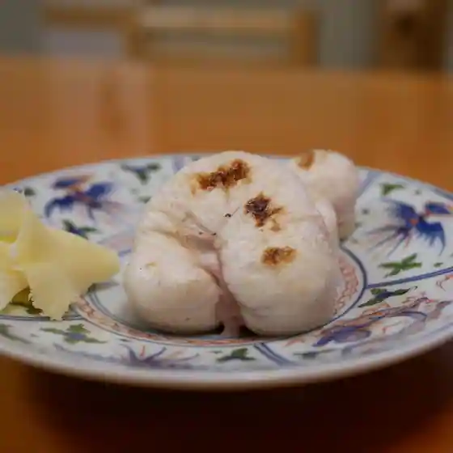
Fuku Matsurigoto
ドライブイン黒浜
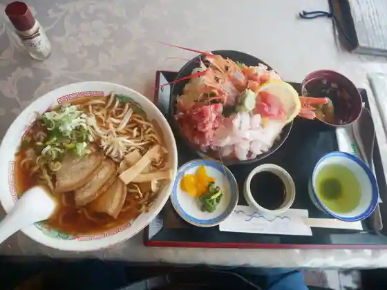
Doraibuin Kuro Hama
すし遊館 あさひ ゆめモール西条店
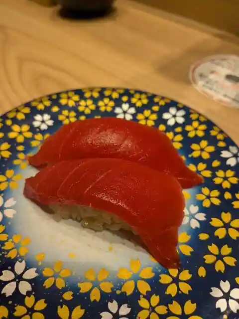
Sushi Yu Kan Asahi Yume Moru Saijo
お好み焼 SETO
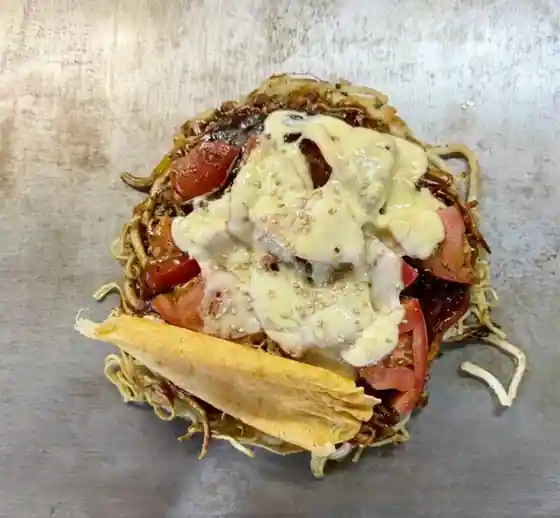
O Konomi Yaki SETO
趣向料理 松風
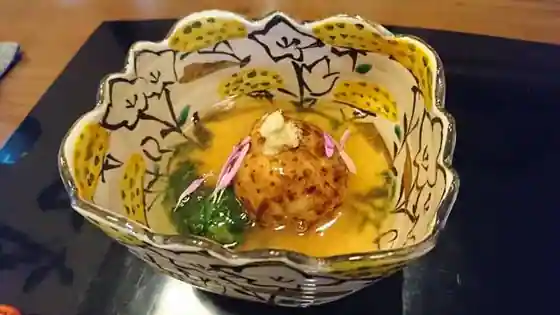
Shuko Ryori Matsukaze
くろんぼ屋
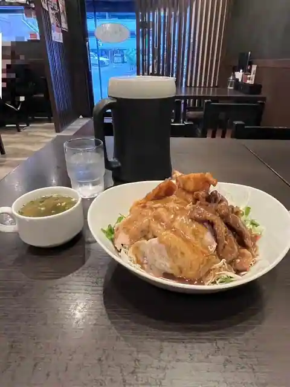
Kuronbo Ya
佛蘭西屋
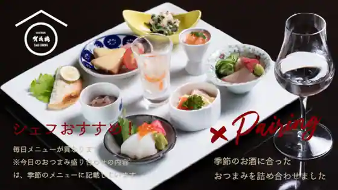
Furansu Ya
あおぞう
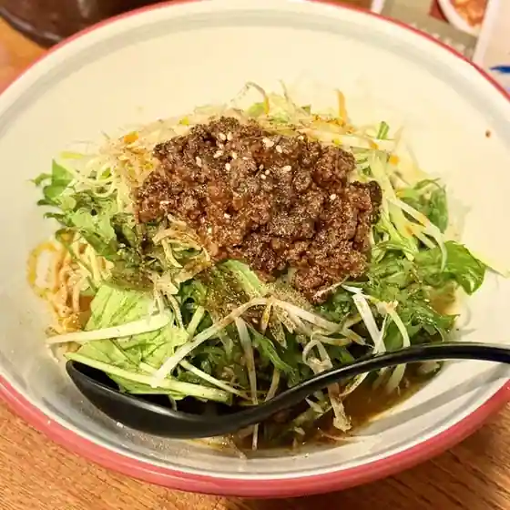
Aozo
らーめん まつ☆うら
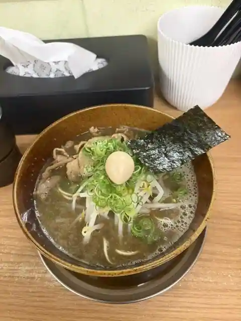
Ramen Matsu Ura
味よし
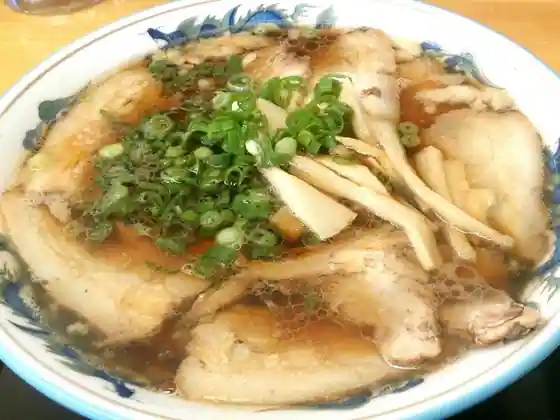
Aji Yoshi
とんかつ日刈り
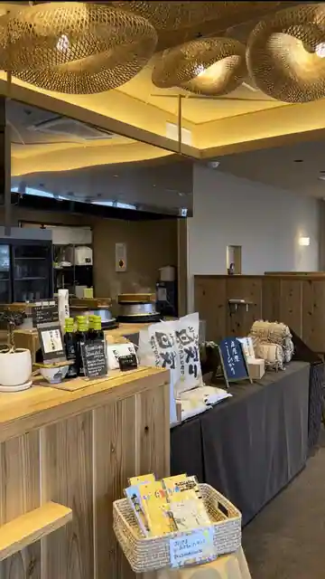
Tonkatsu Nichi Kari
らーめん・つけ麺 よろしく
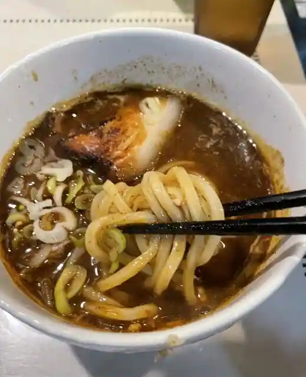
Ramen Tsuke Men Yoroshiku
あすなろベイキングカンパニー
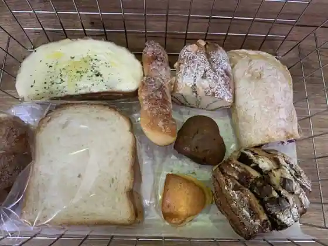
Asunaro Beikingukanpani
いな穂
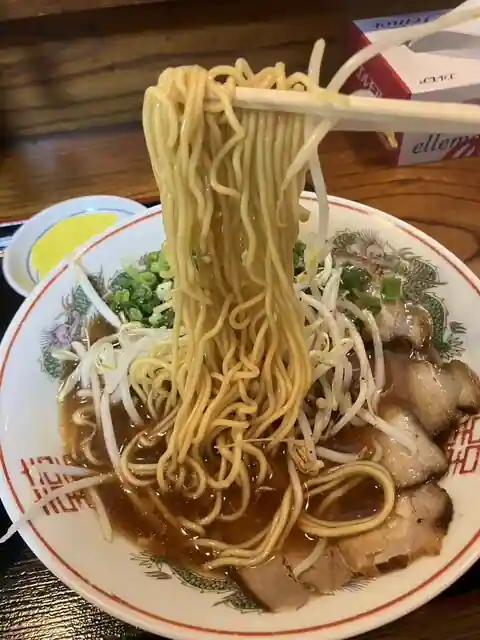
Ina Ho
お好み焼き 楽
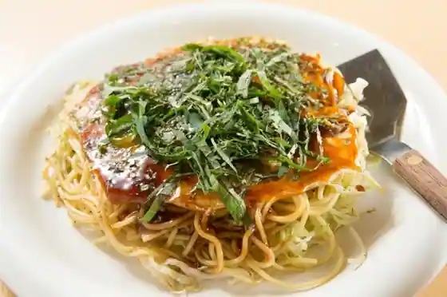
O Konomi Yaki Raku
藤椒
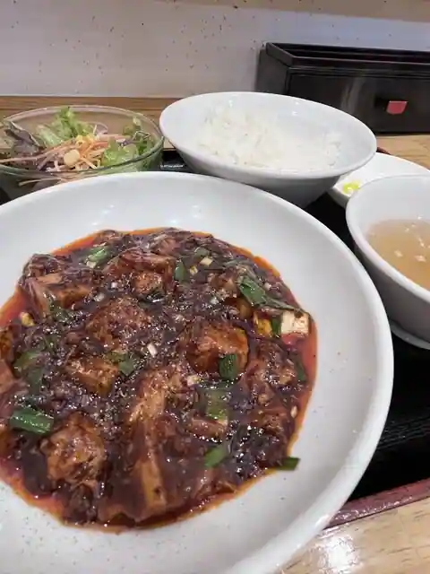
Fuji Sho
酒泉館
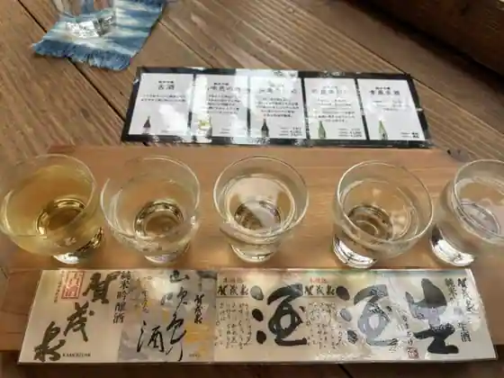
Shusen Kan
五ェ門 東広島店
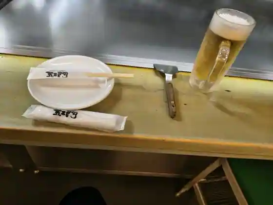
Go E Mon Higashi Hiroshima
アザミショクドウ
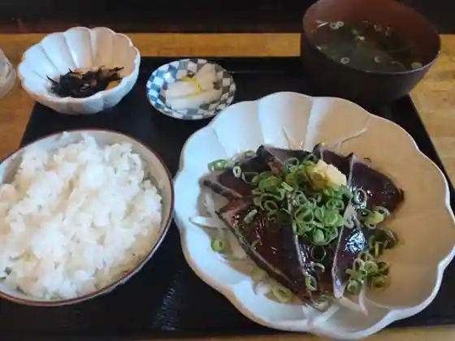
Azamishokudou
アンデルセン レストラン 小谷サービスエリア（上り線)
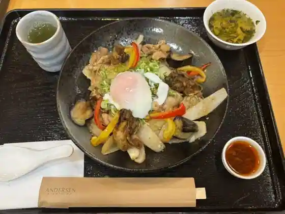
Anderusen Restaurant Kotani Sabisueria (Nobori Sen)
ブーランジェリー・ラパン 御薗宇店
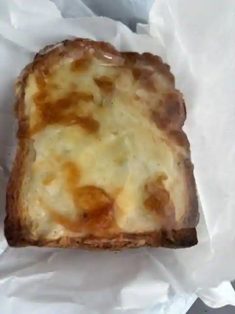
Buranjieri Ra Bakery Misono U
パスタ・アマーレ
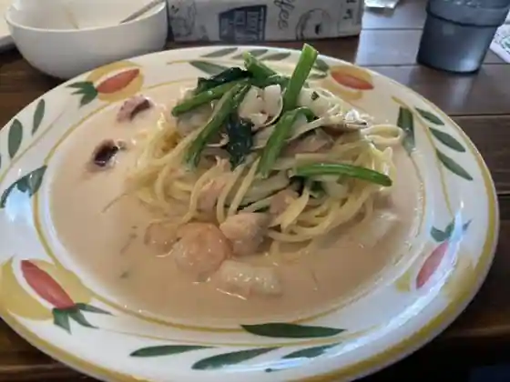
Pasta Amare
Sights
Saijo Shuzo Tori

San Tsu Shiro Burial Mound

Aki Kokubunji
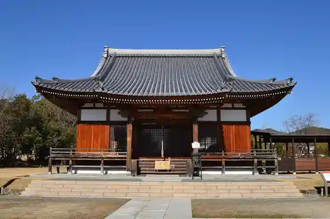
Kagamiyama Castle Ruins
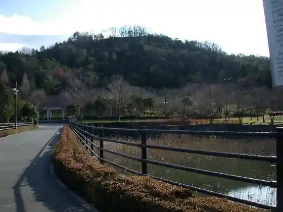
Saijo Eki